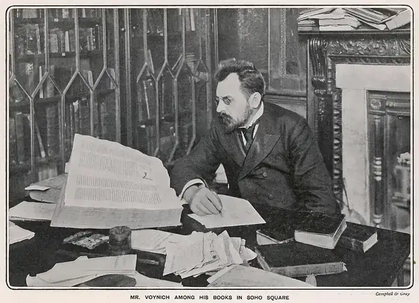

What it is
A codex of about 240 vellum pages, now Beinecke MS 408 at Yale, named after Wilfrid Voynich, the book dealer who bought it in 1912. It contains an unknown script — written left to right, in a fluent, practised hand — alongside illustrations: plants that match no known species, astronomical/astrological diagrams with zodiac symbols, and pages of small figures bathing in interconnected pools.
Maps, diagrams and images


Radiocarbon dating of the vellum in 2009 gave a range of roughly 1404–1438. The inks are consistent with that period. This is the one hard fact that constrains everything else: it is not a modern forgery made on old blank parchment, unless the forger was extraordinarily well equipped.
Its provenance is documented from the sixteenth century: it appears in the collection of Rudolf II in Prague, was owned by the alchemist Georg Baresch, then Athanasius Kircher, and passed through the Jesuit college at Frascati before Voynich.
Why it resists
The text behaves oddly in ways that are measurably real. Word-length distribution, Zipf's-law behaviour and the repetition of common tokens all look language-like rather than random. But the vocabulary is small and repetitive, there are almost no corrections, and the same words recur in similar positions across sections — properties consistent with a constructed language, a cipher with a small plaintext vocabulary, or a very careful hoax.
That combination is what defeats attempts. A cipher needs a key or a crib — a known plaintext to anchor the mapping — and no crib has ever been identified. A natural language needs identifiable roots, and none have been convincingly matched.
Every few years a new solution is announced: a Turkish scholar's claim, a "proto-Romance" reading, an elaborate acrostic, a Hebrew cipher, an Aztec connection. The pattern is consistent — the method is applied, a few words appear to make sense, and then the reading fails to generalise, or requires a different substitution for each section, or produces text nobody else can reproduce.
Properly evaluating these is not snobbery. A real decipherment (Egyptian hieroglyphs, Linear B, Mayan) had three features: it explained the whole corpus, it predicted readings of new passages, and independent specialists could apply it. No Voynich claim has managed the third.
What the honest answer is
We do not know what it says, whether it says anything, or who made it. The leading candidates are a cipher of a natural language, a constructed language or personal code, and a hoax designed to look meaningful — and the evidence does not currently distinguish them.
"Unsolved" is the correct scientific answer here, and it is worth contrasting with the claims that manufacture a solution. The archive keeps this page in Live debate because the argument is real and ongoing, not because the mystery is being protected.
One useful consequence: the Voynich is the best available test of intellectual honesty about unreadable evidence. Anyone who tells you they have cracked it should be asked the same three questions — does it explain everything, does it predict, and can others reproduce it?
Sources for this page
- Beinecke Library, Yale — Voynich Manuscript, full digital facsimile (MS 408)yale.edu
- Wikipedia, “Voynich manuscript” — provenance, dating, decipherment claimsen.wikipedia.org
- University of Arizona, radiocarbon dating of the vellum (2009)arizona.edu
- The Atlantic, “The Unread: the mystery of the Voynich manuscript”newyorker.com
Open resources on this topic
- BookRVM ( Revised Vulgate Method): A Cross Referential Decoding Model For The Voynich Manuscript — Raymond Aranyics · 2026 (Internet Archive, free to read)
- BookThe Voynich Manuscript — Yale University · 1404 (Internet Archive, free to read)
- BookDigital Paleography And The Voynich Manuscript — Lisa Fagin Davis · 2020 (Internet Archive, free to read)
- PapersOpen-access articles: DOAJ · PubMed Central · Internet Archive Scholar
- BooksPublic-domain and borrowable copies: Open Library · Project Gutenberg · Google Books
Cite this page
Momin, S. (2026). The Voynich Manuscript. The Larger World Archive. https://drsamonline.github.io/LARGE_GLOBE/voynich-manuscript.htmlMomin, Sohil. “The Voynich Manuscript.” The Larger World Archive, 2026, https://drsamonline.github.io/LARGE_GLOBE/voynich-manuscript.html.Momin, Sohil. “The Voynich Manuscript.” The Larger World Archive, 2026. https://drsamonline.github.io/LARGE_GLOBE/voynich-manuscript.html.@misc{the2026voynich,
author = {Momin, Sohil},
title = {The Voynich Manuscript},
year = {2026},
howpublished = {The Larger World Archive},
url = {https://drsamonline.github.io/LARGE_GLOBE/voynich-manuscript.html},
note = {Last reviewed 20 November 2026}
}Last reviewed 20 November 2026 · Corrections policy · this page is not peer reviewed